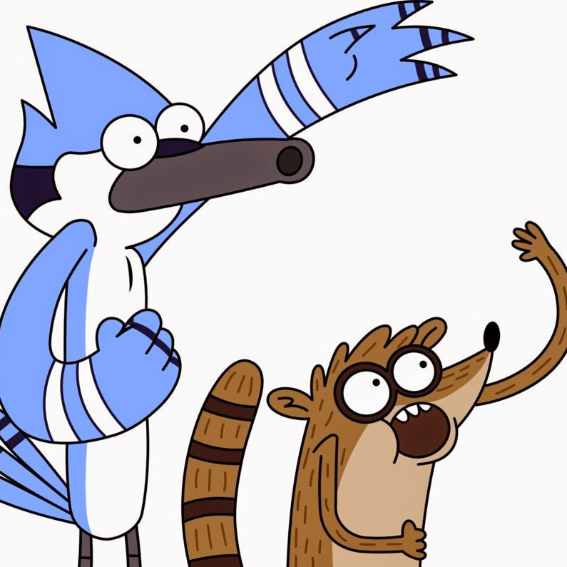

Historias Corrientes
Dos colegas que trabajan en un parque de dimensiones inciertas. Las situaciones más normales se transforman rápidamente en las situaciones más extremas. Una vorágine de videojuegos, rock and roll y concursos de comida te esperan en esta maravilla.